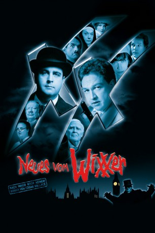
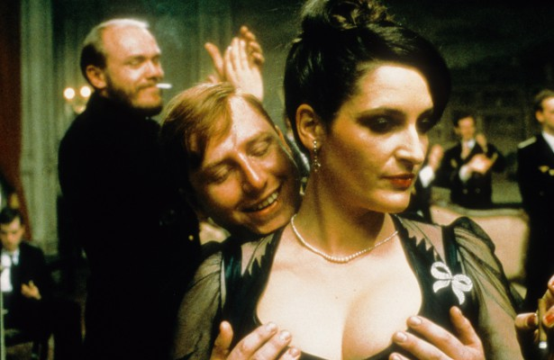
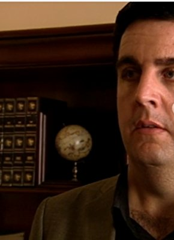

#5176 Neues vom Wixxer
 
 IMDB-Wertung: 6.2 / 10
IMDB-Wertung: 6.2 / 10  Metascore: 0
Metascore: 0 
Der Wixxer ist tot, es lebe der neue Wixxer! Offenbar geht ein Nachahmungstäter in London um, und auf der Todesliste steht - Inspektor Very Long! Außerdem - zum Entsetzen von Inspektor Even Longer - der Adelssproß Victoria Dickham, Tochter des legendären Ex-Scotland-Yard-Chefs Lord Dickham und heimliche Geliebte von Even Longer. Nur 24 Stunden Zeit bleiben, um alles gut zu machen und den bösen, bösen Wixxer zu enttarnen; 24 Stunden, die durchs Irrenhaus in ein Kloster und in den Puff an der Themse führen.
Jahr: 2007
Dauer: 97 Minuten
FSK: 6
Land: Deutschland Studio: Constantin FilmTonspuren:
Untertitel:
Auflösung: 1080p (1920x816) Größe: 8171 MB
Genre: Komödie, Krimi, Mystery
Regisseur: Cyrill Boss, Philipp Stennert
Drehbuch: Nai-Hoi Yau
Soundtrack:
Darsteller:
- Joachim Fuchsberger als Lord Dickham
- Christiane Paul als Victoria Dickham
- Judy Winter als Schwester Lucipha
- Christian Tramitz als Much Longer
- Gregor Bauer als Blacky
- Dennis Gansel als Singender Bobby 1
- Karel Hábl als Türsteher
-  Martin Semmelrogge als Der scharfe Eddie
 Thomas Heinze als Rather Short
Thomas Heinze als Rather Short Oliver Kalkofe als Even Longer / Pickeliger Teenager
Oliver Kalkofe als Even Longer / Pickeliger Teenager-  Bastian Pastewka als Very Long / Roseninder / Onanierender Otter
 Christoph Maria Herbst als Dr. Alfons Hatler
Christoph Maria Herbst als Dr. Alfons Hatler- Wolfgang Völz als Sir John
- Sonja Kirchberger als Lady Dickham
- Oliver Welke als Dr. Brinkman
- Chris Howland als Butler Hudson
- Lars Rudolph als Chucky Norris
- Jörg Strombach als Singender Bobby 2
- Vojtech Svozil als C.C. Catch
- Kristyna Horacková als Victoria als Kind
- Martin Vasques als Spurenermittler
- Michaela Bandi als Bardame
- Birte Schielke als Gast im Flötenschlumpf
- Michal Grün als Wixxer
- Michael Kessler als Bobby
 Ingrid van Bergen als Bedienung
Ingrid van Bergen als Bedienung- Achim Mentzel als Anstaltsinsasse
- Roger Willemsen als Himself
- Frank Zander als Fred Fartwind
- Joy Fleming als Cookie Dent
- Roberto Blanco als Puppenspieler
- Bernd Clüver als Junge mit der Mundharmonika
- Tanja Mairhofer als Tanzende Nonne
- Jan Hofer als Hofberichterstatter
- Hella von Sinnen als Schwester Stephanie
- Frank Liehr als Himself , scenes deleted
- Horst als (scenes deleted
- Helmut Krauss als Edgar Wallace sein Nachbar
- Manou Lubowski als Werbespot 1. Sprecher
- Solveig Duda als Werbespot 2. Sprecher
- Crock Krumbiegel als Werbespot 3. Sprecher
- Cyrill Boss als Sanitäter , uncredited
- Matthias Müsse als BBC-Reporter , uncredited
- Philipp Stennert als Sanitäter , uncredited
- Suggs als Sänger , uncredited
Datei: X:\2-Dilogie(N-Z)\Wixxer\Neues vom Wixxer (2007, FSK6, 1920x816).mkv seit 28.12.2016
Festplatte: HD Collection-2(A-Z)-3(A-M)
 Alle Filme aus Gruppe '2-Dilogie(N-Z)\Wixxer'
Alle Filme aus Gruppe '2-Dilogie(N-Z)\Wixxer'